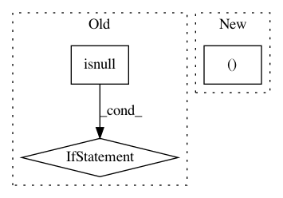

5c2acf7c1949416002a138d570e1650f4aa65ed3,networkml/featurizers/funcs/host.py,HostBase,_get_src_ip,#HostBase#Any#,64
Before Change
def _get_src_ip(self, row):
ipv = row["ip.version"]
if not pd.isnull(ipv):
ipv = int(ipv)
if ipv == 4:
return self._get_ip(row, ("ip.src", "ip.src_host"))
return self._get_ip(row, ("ipv6.src", "ipv6.src_host"))
return None
def _get_dst_ip(self, row):
ipv = row["ip.version"]
After Change
return None
def _get_src_ip(self, row):
return self._get_ip(row, ("src", "src_host"))
def _get_dst_ip(self, row):
return self._get_ip(row, ("dst", "dst_host"))
In pattern: SUPERPATTERN
Frequency: 3
Non-data size: 3
Instances
Project Name: CyberReboot/NetworkML
Commit Name: 5c2acf7c1949416002a138d570e1650f4aa65ed3
Time: 2020-04-01
Author: josh@vandervecken.com
File Name: networkml/featurizers/funcs/host.py
Class Name: HostBase
Method Name: _get_src_ip
Project Name: CyberReboot/NetworkML
Commit Name: 5c2acf7c1949416002a138d570e1650f4aa65ed3
Time: 2020-04-01
Author: josh@vandervecken.com
File Name: networkml/featurizers/funcs/host.py
Class Name: HostBase
Method Name: _get_dst_ip
Project Name: ClimbsRocks/auto_ml
Commit Name: c992801a09c87dd528a7316caad56bf64c007f39
Time: 2017-03-16
Author: ClimbsBytes@gmail.com
File Name: auto_ml/predictor.py
Class Name: Predictor
Method Name: _prepare_for_training